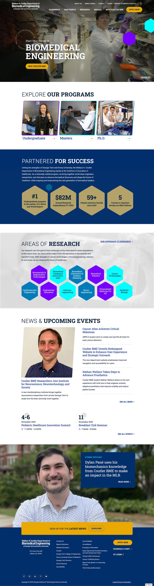
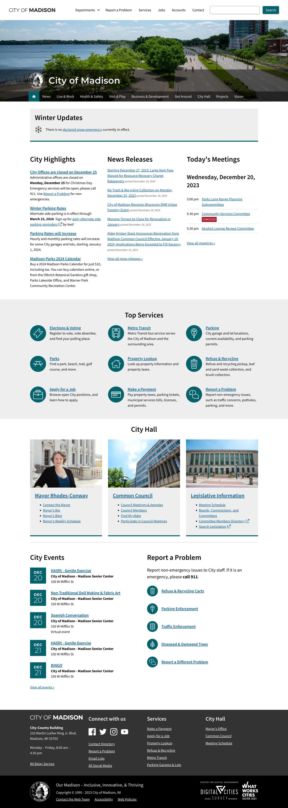
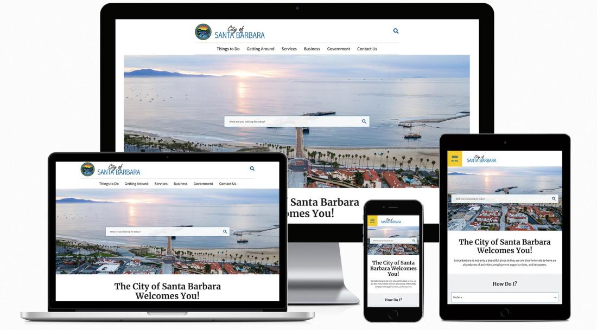
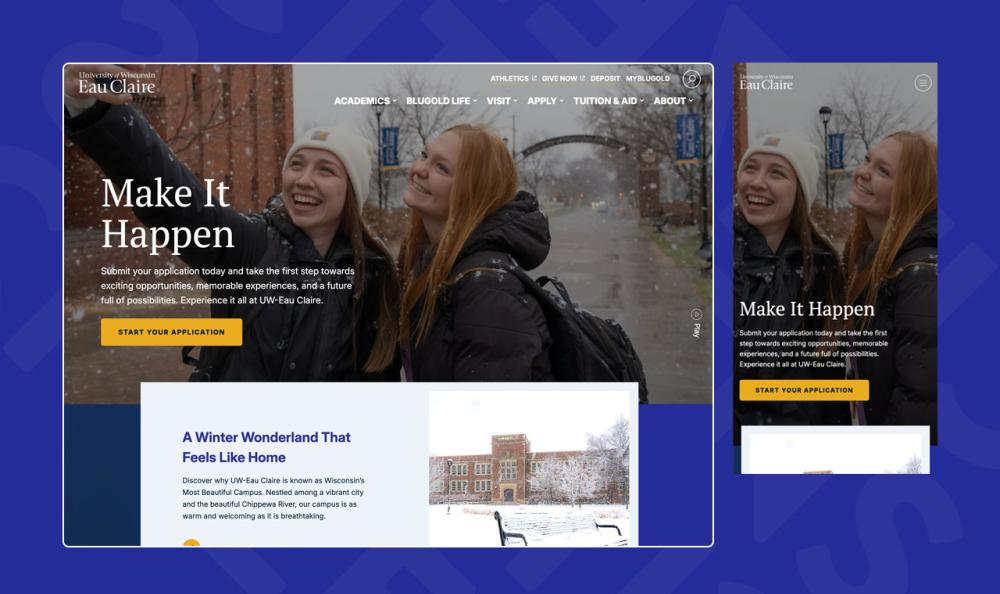

Government
Minnesota Department of Health
Long-term partnership: multisite Drupal ecosystem, 988 mental health crisis hotline, design system overhaul, technical audits, and ongoing governance consulting.
Enterprise Drupal. Strategy. Design. WordPress. React. Custom software. Data integrations. For 14 years, government agencies and universities have trusted us with the digital work that matters most. AI has changed what's possible. We're building accordingly.
Our founders have been building the web since 1994. We hand-coded HTML before CSS existed. We built custom content management systems before the term CMS was invented. We've been deep in Drupal for over 20 years — because it remains one of the most battle-tested solutions in the world. It is still our favorite for many situations.
But we have seen the web go from static pages to dynamic applications to cloud platforms to mobile-first to AI. Every time the tools changed, we adapted — because we've always cared about the same thing: finding the right solution for the problem.
What has changed is who we get to be. For decades, we were the builders — the developers, the strategists, the designers, the ones who made it work. AI hasn't replaced that. It's elevated it. Now we're the thinkers, the strategists, the experts who harness these tools in ways most people are still figuring out. Less time on what machines do well. More time on what we do best.
AI writes cleaner, more consistent code than most developers on the planet — faster than any human team could.
AI runs more thorough testing than the best QA teams. It doesn't get tired. It doesn't skip edge cases at 4pm on a Friday.
AI doesn't take vacations, doesn't lose context between sprints, and doesn't need three meetings to get aligned.
Most agencies see that as a threat. We see it as the best thing that ever happened to a team like ours.
AI can write and test code all day. But it doesn't know about the 10,000 PDFs nobody's touched since 2014, the content mess three redesigns never fixed, the legacy platform your whole department still depends on, or the five aging websites that somehow need to become one. It doesn't know which tools could actually make your team's life easier. That takes 30 years of building on the web. That takes knowing how government bureaucracy works, how higher ed stakeholders think, how security and accessibility standards actually apply in the real world, and what happens when software meets people.
We use AI to go deeper, not to cut corners. More testing. More iterations. Solutions we couldn't have built a year ago. And senior developers verifying every piece of it.
Every engagement starts with humans — understanding your operations, your pain points, and the outcomes you actually need. We've done this for 14 years. AI doesn't replace it.
We use custom agents and tools to help us strategize and plan. Multiple scenarios and working prototypes in days, not months. You see and test real solutions before committing to a full build. Less risk. Better outcomes.
AI writes the code. Our senior developers review every line. A swarm of QA agents provide end-to-end testing. Our team verifies every result. You get the speed of AI with the judgment of experience.
AI-generated test suites cover functionality, accessibility, performance, security, and cross-browser compatibility. Problems get caught before your users ever see them.
Deployment pipelines, environment provisioning, monitoring — all automated, all tested. Your site goes live with confidence, not crossed fingers.
Security patches, dependency updates, uptime monitoring, and proactive maintenance. We keep your systems healthy so your team can focus on their actual jobs.
AI already understands your codebase implicitly. That means faster iterations, smarter recommendations, and improvements that build on everything that came before. Your investment compounds over time.
The best partnerships don't end at launch. Once we know your systems, your team, and your goals, the next project moves even faster. New tools. New integrations. New ideas — built on a foundation we've already laid together.
Three systems that don't talk to each other. Staff copying data between spreadsheets because nobody ever built the bridge. A compliance audit that eats two weeks every quarter. An enrollment process with six steps that could be two. A website redesign that was supposed to take eight months and it's been two years.
These are the problems that keep public sector leaders up at night. And until recently, solving them meant six-figure custom software projects, 18-month timelines, and outcomes nobody could guarantee. Only the biggest agencies with the biggest budgets could even attempt it.
We've always built great websites. Now we solve the harder problems, too — custom software and tools, integrations, and workflows that make organizations actually run better.
The tools your team actually needs — built fast, tested thoroughly, designed for your specific workflows. Data dashboards. Internal portals. Constituent service tools. Case management systems. No more paying for expensive SaaS that doesn't quite fit — we build exactly what you need.
Enterprise Drupal, WordPress, headless CMS — accessible, security-hardened, and built to last. Every build includes dependency audits, role-based access controls, and proactive monitoring. Drupal Certified Partner. Pantheon Premier. Acquia Preferred.
Connect the systems that don't talk to each other. Banner, Slate, Salesforce, legacy databases, state reporting systems — we build the bridges so your staff stops being the middleware.
Automate the tedious stuff. Compliance checks, report generation, data entry, approvals, notifications. Free your people to do the work that actually requires a human.
Intelligent search for your website. Chatbots that actually help constituents. Content tools that save your editors hours. AI governance policies that keep you compliant.
AI-powered WCAG auditing plus human expert review. Security hardening, vulnerability scanning, and incident response planning baked into every build. Section 508. FERPA. FedRAMP-aligned hosting. State privacy laws. We don't just check boxes — we build systems your security team can trust.
We've always known this work. Now it's a core offering. AI-powered site audits, technical SEO, search analytics, content gap analysis, and ongoing content strategy. Real data driving real decisions — not vanity metrics in a monthly PDF.
"Can you connect our enrollment system to our CRM and generate the compliance reports automatically?"
"Can you build a tool that lets case workers track and share client data across three departments — securely?"
"Can you automate the 40 hours a month we spend generating board reports from five different data sources?"
The answer used to be: "Not without a huge budget and a long timeline."
Now the answer is yes.
We partner with organizations whose work has real impact on real people.
Long-term partnership: multisite Drupal ecosystem, 988 mental health crisis hotline, design system overhaul, technical audits, and ongoing governance consulting.

Emory & Georgia Tech. Redesign for a top-ranked biomedical program — research profiles, faculty directories, enrollment tools.

Full website rebuild for Wisconsin's capital. Architecture overhaul, content migration, and training their internal team to maintain it independently.

Multisite platform: city services, library, parks, airport. Multilingual support, real-time parking data, ongoing partnership since 2022.

Campus rebranding, student union platforms, agricultural extension sites. Multiple institutions, one trusted partner.
“I view this as a long-term relationship and have complete trust in the guidance and capabilities of the EC team.”
— Scott Nelson, Webmaster
City of Santa Barbara
“We had a spectacular experience and felt that we had a partner who had our campus' best interests in mind at all times.”
— Director
University of Wisconsin System
“We trust their expertise to accomplish our goals, and their troubleshooting when things get complicated.”
— City of Bloomington, MN
Government procurement. Higher ed stakeholder committees. Accessibility mandates. Content governance for 200-page sites. Compliance frameworks that make vendors run. We've lived it for 14 years. That depth isn't something you can prompt into existence.
Other shops use AI to cut costs. We use it to raise quality and expand what's possible. AI-generated test suites, automated accessibility scanning, custom tools we couldn't have built before. The savings go back into your project, not our margins.
We're eight people who deliver like twenty. No layers of account managers between you and the people doing the work. Your strategist, designer, and developer know your name — and they're directly accountable for the result.
System integrations. Workflow automation. Custom internal tools. Data pipelines. These used to require massive teams and budgets. AI changed the math. We can build solutions today that weren't feasible a year ago — at a fraction of the traditional cost.
Founded in 2012. Our longest client relationships span a decade. We build for the long term because that's how public sector work should be done — and because that's who we are. Minneapolis-rooted, nationwide reach.
We don't oversell. We don't use buzzwords to sound impressive. If something is a bad idea, we'll say so. If AI isn't the right fit for a part of your project, we'll tell you. In a market full of hype and failed pilots, you deserve a partner who shoots straight.
Whether it's a new website, a system integration nightmare, a compliance deadline, or an idea that nobody's been able to build yet — we'd love to hear about it. No pitch decks. Just a conversation.
Based in Minneapolis, MN. Working with teams nationwide.